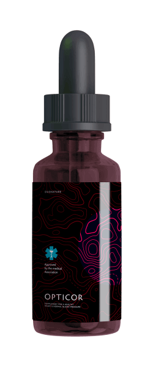

Dopo tale pulizia dei vasi sanguigni, l'ipertensione e le nove
malattie, che sono considerate "incurabili", scompariranno.
È noto che l'ipertensione, gli ictus e gli attacchi di cuore
sono il risultato di vasi sanguigni "ostruiti" con colesterolo. Malattia
cardiovascolare. Tuttavia, pochi sanno che questa è solo la punta dell'iceberg.
I vasi sanguigni "ostruiti" sono la causa di nove su 10 malattie croniche
considerate incurabili.
Emicrania, pressione differenziale. Le articolazioni fanno
male e scricchiolano, il collo non gira completamente e la schiena non si piega.
La sera le gambe si gonfiano e la mattina il viso. Hai il ronzio nelle orecchie.
Le dita sono intorpidite e gli arti sono congelati. La tua vista e la tua
memoria stanno peggiorando. Non hai la forza. Molti potrebbero dire che è legato
all'età, ma non lo è.
- Perché il 90% della tua salute dipende dai tuoi vasi sanguigni?
- Oltre al colesterolo, da cui i vasi sanguigni si intasano?
- Quattro segni evidenti e sette sintomi nascosti di cattiva circolazione
- Come pulire in modo sicuro i vasi sanguigni a casa?
A queste domande ha risposto il capo del Dipartimento di
chirurgia vascolare dell'ospedale della città di Milano. Professore,
neurochirurgo, dottore onorario dell'Italia, Gianni Moro.
Gianni Moro ha eseguito più di 11000 interventi chirurgici al
cervello aperto. Il suo paziente più giovane aveva solo due giorni.
Gianni Moro è in grado di spiegare complesse procedure mediche in
parole semplici. Ha scritto 47 famosi libri scientifici e tutorial per le
persone senza istruzione medica. È assolutamente convinto che i nostri vasi
sanguigni costituiscano il 90% della salute del nostro corpo e che il nostro
benessere dipende dalla loro purezza.
Perché il 90% della nostra salute dipende dai nostri vasi sanguigni?
Signore Moro, Lei dice sempre che i vasi sanguigni costituiscono il 90% della salute del corpo. Perché?
Qual è il più grande organo nel corpo umano? Pochi lo sanno. Anche
gli studenti di medicina spesso sbagliano. Il più delle volte si dice: cervello
o fegato. I più istruiti dicono "pelle". Ma in realtà il nostro organo più
grande è il sistema vascolare.
È possibile
avvolgere
il nostro pianeta 2,5 volte con i vasi sanguigni
umani.
Immagina. Se districhi tutti i vasi sanguigni del corpo umano e li colleghi in un filo, la lunghezza di questo filo sarà di circa 100.000 chilometri.
Per chiarezza la longitudine dell'equatore è di 40000
chilometri. Ecco perché il "filo" dei vasi sanguigni umani può avvolgere il
pianeta 2,5 volte.
Cosa ne pensi di questo rapporto?
I vasi sanguigni non sono solo i canali attraverso i quali scorre
il sangue. Questo è un organo unico e complesso in cui il dolore si verifica
rapidamente quando si verifica un problema.
Cattiva circolazione nelle gambe provoca vene
varicose, gonfiore costante e pesantezza alle gambe, sensibilità al freddo o, al
contrario, bruciore insopportabile alle gambe. Tacchi incrinati. La cattiva
circolazione non protegge dai batteri e può persino portare alla formazione di
funghi
Quando i vasi sanguigni che alimentano il fegato si bloccano,
questo porta a epatite. Sapore amaro in bocca. E anche quando si mangia
qualcosa di grasso, c'è un sapore amaro in bocca.
Vasi sanguigni indeboliti e sporchi asciugano le
cartilagini. Le articolazioni scricchiolano e fanno male, appare osteocondrosi o
ernia.
Quando i vasi sanguigni del retto perdono il loro
tono ci sono emorroidi dolorose.
Cattivi vasi sanguigni nell'occhio portano a visione
offuscata e sfocata. Sviluppo della cataratta. Arrossamento degli occhi, che
spesso percepiamo come affaticamento, ma in realtà è una micro-eruzione causata
dalla rottura dei piccoli capillari oculari.
L'afflusso di sangue al cervello è difficile, hai
vertigini, ronzio nelle orecchie e dimenticanza. Ti è successo anche questo:
entri in cucina e dimentichi immediatamente cosa sei venuto a fare. O una parola
comunemente usata sulla punta della lingua, ma non puoi ricordarla. Questi sono
tutti sintomi di deterioramento dei vasi sanguigni nel cervello.
E, naturalmente, la regina della cattiva circolazione, è la sua maestà ipertensione. L'ipertensione è la madre d'ictus e la sorella di attacchi di cuore.
I vasi sanguigni sono il nostro sistema nutrizionale e la vita
stessa circola attraverso questi vasi. Se una parte significativa del percorso è
bloccata, la vita si ferma.
I vasi sanguigni ostruiti causano la fame di tutti gli
organi.
Sovrappeso, a proposito, è strettamente collegato ai vasi
sanguigni. I vasi sanguigni ostruiti causano fame negli organi e non possono
inviare la quantità necessaria di nutrienti ad altri organi. Ecco perché il
cervello invia segnali per mangiare. E la persona mangia. Ma l'organo non riceve
ancora i nutrienti necessari a causa dei vasi sanguigni bloccati. Il cervello
invia di nuovo il segnale. Ed è per questo che siamo in un circolo vizioso.
E spesso è qui che nasce la necessità di masticare qualcosa, con
l'incredibile avidità di cibi dolci e grassi, poiché il corpo ha bisogno di
calorie.
Quando i miei colleghi dicono ai loro pazienti: "hai l'ipertensione
perché sei sovrappeso". Confondono la causa e le conseguenze. L'ipertensione non
è dovuta all'eccesso di peso. Il sovrappeso è a causa dell'ipertensione.
Il famoso proverbio dice: "Non puoi essere felice se non sei sano" e può essere continuato come segue: "e una buona salute non è possibile senza vasi sanguigni puliti".
Ecco perché non smetto mai di ripetere: se vuoi vivere una vita
piena, pulisci e prenditi cura dei tuoi vasi sanguigni. Vasi sanguigni puliti
è la chiave per evitare il 90% delle malattie croniche, molte delle
quali sono considerate "incurabili".
Oltre al colesterolo, cos'altro ostruisce i vasi sanguigni?
Sappiamo tutti che il colesterolo è cattivo. Blocca i nostri vasi sanguigni, rallenta il flusso e ferma la circolazione. Ma è l'unico colpevole?
Come 6.1
chilogrammi
di una massa infetta che rimane nei vasi sanguigni fino
a 50 anni.
Sì, è vero. Le placche di colesterolo, chiamate anche "placche
aterosclerotiche", rappresentano circa il 65-70% della quantità totale
d'infezione nei vasi sanguigni.
All'età di 50 anni, i vasi sanguigni di una persona si accumulano
fino a cinque chili di placche di colesterolo . I depositi di
colesterolo restringono il lume dei vasi in 4-5 volte.
Immagina. Se il lume normale nei vasi sanguigni è uguale alla larghezza del dito, allora cinque chili di placche di colesterolo diminuiscono nel lume fino a quattro millimetri.
Le placche di colesterolo da sole non sono pericolose per la vita.
Sì, peggiorano la qualità della vita, aumentano la pressione sanguigna, le
emicranie, i dolori articolari, la stanchezza e l'apatia. I coaguli di sangue
che si accumulano nei nostri vasi sanguigni sono molto più pericolosi.
I coaguli di sangue si accumulano in quantità significative, da 800
grammi a 1 chilogrammo. Ma il pericolo principale è che sono instabili. In
qualsiasi momento alla ricerca della vittima, il coagulo potrebbe rompersi e
passare attraverso i vasi sanguigni.
Se il coagulo è abbastanza grande, può chiudere saldamente il vaso
sanguigno della vittima. C'è ischemia, una completa cessazione dell'afflusso di
sangue all'organo che si nutre di un tale vaso.
Un ictus ischemico è un blocco di un vaso sanguigno nel cervello.
Un attacco di cuore è un blocco dell'arteria cardiaca. Ischemia epatica,
collasso polmonare, insufficienza renale. Le emorroidi sono ischemia del retto.
Anche il blocco di piccoli vasi nelle gambe alla fine porta alla necrosi:
cancrena.
La scala nei vasi sanguigni è i resti di farmaci e integratori
alimentari. Si accumulano in quantità di 300-400 grammi . La maggior
parte della calce si accumula nei vasi del cervello.
Il pericolo del fosfato di calcio è che ha una struttura
cristallina acuta. Se lo spasmo vascolare si verifica dopo una forte contrazione
causata da stress, attività fisica o condizioni meteorologiche, il cristallo può
perforare il vaso e causare una rottura. La rottura del vaso del cervello
significa un ictus emorragico.
Quattro segni evidenti e sette sintomi nascosti di cattiva circolazione
Quali sintomi mostrano che i miei vasi sanguigni sono contaminati? Come capire che il corpo ci sta urlando: "Pulisci i vasi sanguigni subito"!
Onestamente, se hai 45 anni e non hai mai preso rimedi nutritetici
per pulire i vasi sanguigni, ti garantisco che hai problemi con i vasi
sanguigni.
45 anni
è
PULISCE LE PARETI VASCOLARI
CONVERTITO IN ENERGIA
RIDUCE GLI SPASMI
CALMA IL CUORE
RIPRISTINA I VASI SANGUIGNI
RISVEGLIO FACILE
COLAZIONE DELIZIOSA
FORZA EROICA
TRANQUILLITÀ ASSOLUTA
VIVACITÀ INVIDIABILE
BUON SONNO

45 anni
è
il limite dopo il quale i vasi sanguigni devono essere
puliti.
L'ostruzione vascolare dovuta al colesterolo, ai coaguli di
sangue e alla calcificazione sono processi naturali d'invecchiamento.
Naturalmente, il cibo moderno, i farmaci, il tabacco e l'alcol accelerano
questo processo "letteralmente" da 5 a 8 volte. Ma siamo tutti umani e non
possiamo fare a meno del mondo in cui viviamo.
I principali sintomi d'intasamento dei vasi sanguigni
Se hai una diagnosi d'ipertensione, potresti non ascoltare.
L'ipertensione è la regina della cattiva circolazione.
Soffri di sbalzi di pressione? A causa dell'alta pressione
sanguigna, sei costretto a prendere farmaci? Ciò significa che il 30% dei
tuoi vasi sanguigni non sono ancora bloccati. Il resto è pieno di placche di
colesterolo, coaguli di sangue e calcio.
La minima tensione, i cambiamenti climatici e le tempeste
magnetiche influenzano immediatamente il benessere di una persona. La
pressione aumenta, la testa inizia a ferire come se un martello bussasse e
le articolazioni si torciano.
Quattro malattie causate da vasi sanguigni poveri.
- 1. Ipertensione La pressione è instabile o costantemente superiore alla norma, che dovrebbe essere controllata dai farmaci. L'indicatore principale e più importante è se hai una diagnosi d'ipertensione? Poi i tuoi vasi sanguigni gridano: "Puliscici!"
- 2. Vene varicose Brutte vene sporgenti nelle gambe, pesantezza e dolore, gonfiore. Sporcizia e coaguli di colesterolo ostruiscono le valvole venose. A poco a poco appaiono "asterischi" vascolari, che in seguito si trasformano in "reticolo" vascolare. E il reticolo si sviluppa in una vena varicosa completa.
- 3. Emorroide Quando i vasi rettali che drenano il sangue vengono bloccati, i nodi emorroidali si gonfiano. Se i vasi sanguigni si bloccano, si verificano ragadi anali.
- 4. Osteocondrosi Questa è la mancanza di circolazione nel tessuto cartilagineo. La cartilagine si irrigidisce e inizia a contrarsi prima che si riprenda. Non si rinnovano o si asciugano. Perdono la capacità di ammortizzare delicatamente.
Sette sintomi nascosti d'ipertensione:
- 1. Edemi I vasi sporchi non hanno il tempo di pompare il liquido. Il metabolismo degli elettroliti è disturbato. La sera, le gambe sono così gonfie che i calzini premono le caviglie, lasciando segni. Non è possibile rimuovere l'anello dal dito. Uno stomaco gonfio parla d'infiammazione degli organi interni.
- 2.Ronzio alle orecchie Da un cigolio appena udibile a un forte rumore che impedisce la concentrazione. Questa è la conseguenza di un aumento della tensione nei vasi sanguigni del cervello, che esercita pressione sul timpano.
- 3. Vertigine Un senso di ubriachezza e vertigini improvvise indicano che l'apparato vestibolare non riceve i nutrienti necessari. Spesso, anche l'udito soffre.
- 4. Insonnia Ti senti stanco e assonnato e poi vai a letto a mezzanotte e non riesci a dormire? Ciò è dovuto a un insufficiente flusso di sangue alla ghiandola pituitaria. Smette di produrre melatonina, l'ormone del sonno.
- 5. Stanchezza Non hai la forza, non vuoi fare niente. Vuoi solo riposare e mangiare. Questa sensazione è aggravata dal fatto che il tuo corpo entri in modalità di risparmio energetico. Gli organi non ricevono abbastanza nutrienti a causa dell'intasamento dei vasi sanguigni e per evitare la morte, il corpo cerca di minimizzare la sua attività.
- 6. Patologie della visione Mosche volanti, increspature, nuvole e foschia nei tuoi occhi. Questi sono tutti sintomi di un debole fondo vascolare.
- 7. Dolore alle articolazioni Per il tempo ti fa male alle articolazioni. Quando ti svegli al mattino, non ti senti allegro e riposato, tutto è intorpidito, come se fossi paralizzato. Ci vuole un po' per iniziare a camminare e impastare le articolazioni che non si piegano dopo il sonno. Le proprietà del liquido sinoviale vengono perse e le articolazioni si attaccano insieme come il riso.
Hai almeno un sintomo? I vasi sanguigni hanno un disperato
bisogno di pulizia e nutrizione.
Molto spesso, le persone hanno più sintomi in diverse combinazioni. E poi appaiono tutti insieme allo stesso tempo.
Le persone infelici cercano di curare ogni malattia
individualmente. Compresse da pressione, unguenti da vene varicose, supposte
da emorroidi, gel da osteocondrosi. E, naturalmente, antidolorifici?
Stanno solo spendendo i loro soldi nelle farmacie. La causa di
tutte queste malattie è la stessa: l'ostruzione vascolare. E dobbiamo
iniziare con la pulizia dei vasi.
Come pulire i vasi sanguigni da colesterolo, coaguli e calce?
Daremo un consiglio medico specifico, con l'esempio di Chiara L. da Milano. Ha 57 anni, sposata, soffre di sovrappeso, ipertensione e vene varicose. Risponde al tempo con la precisione del barometro: ripristina le articolazioni, cerca di far fronte alla stanchezza e alla sonnolenza e riduce il mal di testa.
Come aiutare Chiara, come pulire i vasi sanguigni senza inginocchiarsi davanti ai medici e non ascoltare frasi come "devi perdere peso", "devi fare esercizio fisico"," devi mangiare bene"," è una questione di età", ecc.?
La maggior parte dei farmaci non curano, ma distruggono.
Sì, sfortunatamente, la medicina nella nostra regione non è la
migliore. Per questo motivo, capisco bene la riluttanza ad andare dal
dottore. Ma Chiara starà bene.
Per combattere l'ipertensione e pulire in modo sicuro i vasi
sanguigni, posso dire su un farmaco con una reputazione impeccabile: .
Prolunga la vita da 11 a 17 anni, riempiendola di energia e agilità, non a
costo del tormento e della perdita di ogni forza vitale.
Sicuro come una tisana. Ed è al secondo posto in
termini di efficienza dopo la pulizia chirurgica dei vasi sanguigni
. Ma a differenza della chirurgia, non ha complicazioni ed effetti
collaterali. La procedura pulisce tutti i vasi sanguigni del corpo, dalle
grandi arterie spesse ai più piccoli capillari.
è
composto da estratti di origine vegetale al 100% che, a contatto con
l'acqua, stimola molecole viventi. Questi detergenti delicati
spazzano il muco di colesterolo dai vasi sanguigni, i coaguli di sangue
attaccati alle pareti (placca di calcio) e i residui di farmaci. Tutto ciò
che interferisce con la circolazione sanguigna libera.
Lo sporco accumulato nel corso degli anni si pulirà entro 1,5-2
mesi dopo l'assunzione regolare di .
Dopo un mese e mezzo dissolve e rimuove quattro chili di placche di colesterolo. Dissolve da 900 g a 1 chilo di grumi e filtra 350-400 g di calce.
Mal di testa e ronzio nelle orecchie scompaiono. Il cervello,
ottenendo i nutrienti necessari grazie a vasi sanguigni puliti, funziona
alla velocità di un super computer. I pensieri sono chiari e precisi.
Sensazioni forti, senti suoni piacevoli che prima non
prestavano attenzione. L'udito migliora, puoi distinguere una conversazione
tranquilla nella stanza accanto.
Gli odori acquisiscono nuovi toni. La congestione
nasale, il naso che cola cronico e le allergie scompaiono. I tubi bronchiali
si stanno espandendo. La respirazione diventa frequente e libera. L'aria
fresca che riempie i polmoni si diffonde attraverso il corpo, causando una
leggera euforia.
Sapori diventano più luminosi e pieni. Il cibo normale
porta un piacere indescrivibile. Mangi meno, ma meglio. L'improvvisa sete di
grassi e zuccheri scompare
Le articolazioni dicono "grazie” senza dolore. Lo
scricchiolio scompare completamente, invece c'è un piccolo movimento a causa
della lubrificazione delle articolazioni. È come un motore in cui si cambia
l'olio nero e sporco in uno nuovo e pulito, consentendo una guida perfetta.
Impressionante. Onestamente, è la prima volta che sento di .
Chiara, dopo aver provato, probabilmente, centinaia di diversi mezzi e farmaci, ha deciso di porre fine a tutto questo e ha giurato di non buttare via i suoi soldi per decisioni miracolose discutibili.
I nostri dubbi sono insidiosi, ci fanno perdere molto più di quanto potremmo ottenere per paura di fare tentativi.
Lascia che ti racconti una storia di sfiducia.
Nel 1928 il primo antibiotico, la penicillina, è stato
inventato .Curava facilmente la dissenteria e il tifo, malattie da cui,
all'epoca, le persone morivano inevitabilmente.
Ma la maggior parte delle persone non credeva che potesse
aiutare, perché erano già 1000 volte ingannati nel tentativo di guarire.
Coloro che non avevano paura di provare un altro rimedio sono stati curati.
E coloro che hanno rifiutato di dire "un'altra cura miracolosa che non
aiuta" sono morti, anche se la salvezza era proprio accanto a loro.
Come una volta, la penicillina ha sconfitto le malattie
dominanti del tempo: dissenteria, tifo, peste polmonare. Quindi, nel tempo,
sradicherà le
malattie vascolari. I primi passi sono già stati compiuti in
Giappone, Canada, Corea, Svizzera e Israele per fissare legalmente la
purificazione dei vasi sanguigni con l'aiuto di nutritetici che scelgono la
terapia farmacologica.
Nel nostro paese viene ufficialmente prescritto in un
solo luogo, nel ospedale centrale. Lo stesso luogo in cui si riferiscono
alla "crema della società": ministri, deputati, celebrità e membri
dell'Élite. Lì vengono trattati secondo i protocolli israeliani e le
istruzioni del nostro ministero della salute non sono un decreto per loro.
Ecco perché i pazienti ottengono risultati, non un processo infinito.
Il Ministero della sanità invita il resto dei nostri cittadini
a sottoporsi a trattamento con sostanze chimiche prodotte nelle imprese di
questa élite.
Credo anche che il dubbio sia il nostro peggior nemico, quindi non ho paura di provare qualcosa di nuovo.
Immaginiamo che compro apro la bottiglia, prendo le gocce, bevo con un bicchiere d'acqua... E poi cosa succede? Come funziona il farmaco?
Dal momento che è un tesoro di rari estratti curativi. Le gocce
reagiscono con acqua e iniziano il processo di ossigenazione degli estratti
naturali contenuti nella composizione di .
L'effetto del perossido (ossigenazione) è quello di accelerare l'assorbimento delle molecole terapeutiche arricchendole con ossigeno.
Con la saturazione di umidità e ossigeno, gli estratti curativi
acquisiscono l'effetto dell'idrogeno: saturazione di ossigeno.
Molecole di
sono piccole bombole di ossigeno. Causano il blocco del colesterolo nei
vasi sanguigni e aprono la strada al flusso sanguigno.
In Europa
ha il soprannome di "pulitore vascolare". Dal momento che riflette
accuratamente la sua natura.
Tra 5 minuti l'azione delle gocce inizia, poiché molte
molecole che vivono negli estratti vengono risvegliate dalla reazione di
ossigenazione. è
molto efficace, si beve estratti vivi che funzionano attivamente. E
altri farmaci producono solo effetti molecolari passivi sterilizzati.
Composizione delle gocce permette l'assorbimento
immediato delle molecole viventi. Gli estratti arricchiti di ossigeno sono
facilmente assorbiti nelle pareti dell'esofago. Pertanto
non provoca bruciore di stomaco,
sapore amaro in bocca, eruttazione, non irrita l'intestino e allo stesso
tempo protegge lo stomaco. Anche le persone con ulcere possono
tranquillamente assumere i seguenti farmaci. .
è un tesoro di rari estratti curativi che lavorano armoniosamente per pulire e rafforzare i vasi sanguigni.
Estratto di frutta di mandarino cinese Pulisce i
blocchi causati dal colesterolo. Le molecole di alcune sostanze inviano
particelle di colesterolo che si attaccano alle pareti dei vasi sanguigni.
Il passaggio per il flusso sanguigno è stato eliminato. La cartilagine
rinasce, idrata e ossigenata, azionando un meccanismo di auto purificazione.
La flessibilità è stata ripristinata. Gli scricchiolii nel collo, nella
schiena e nelle articolazioni scompaiono. Niente più dolore e intorpidimento
alle ginocchia e alle dita quando fa freddo.
Niente più tumori. Anche dopo stare sui piedi tutto il giorno,
le gambe non si gonfiano.
L'afflusso di sangue alla pelle viene ripristinato: la rete
vascolare e gli asterischi scompaiono. Le vene varicose si restringono
gradualmente e le emorroidi si asciugano.
Molecole di estratto di biancospino prendono le
particelle sciolte di colesterolo e quando mescolate con loro si trasformano
in lipoproteine utili ad alta densità, che svolgono un ruolo importante
nella combustione dei grassi.
uccide
due piccioni con una fava, da un lato rimuove i depositi di colesterolo dai
vasi sanguigni e dall'altro stimola la perdita di peso. In questo modo si
sente un potente impulso di energia, si vuole muoversi, i tuoi occhi
brillano, e si ha la voglia di spostare le montagne.
Vitamina B6 riduce gli spasmi vascolari. È come
"valeriana" per i vasi sanguigni. Lenisce e rilassa i vasi sanguigni
compressi a causa della scarsa circolazione sanguigna. La pressione
sanguigna ritorna lentamente e in modo sicuro alla normalità. Il mal di
testa scompare, il ronzio nelle orecchie diminuisce, i polmoni e i tubi
bronchiali funzionano senza intoppi e armoniosamente. Non c'è respiro corto.
Magnesio allo stesso tempo, esamina i vasi sanguigni
per la presenza di coaguli di sangue. Il larice diluisce il sangue, lo rende
leggero e liquido. Dissolve coaguli di sangue e anche piccoli aneurismi.
Rimuove i depositi di calcare nei vasi causati dai farmaci.
È come un sacco di cemento rimosso dal cuore, la respirazione
diventa più rilassata e facile. La frequenza cardiaca rallenta e viene
misurata. Niente più aritmie e tachicardia. Il formicolio al petto causato
dalla contaminazione dei vasi sanguigni del cuore è stato dimenticato per
sempre.
La possibilità di avere un infarto è zero.
Estratto di foglie di olivo ripristina le pareti dei
vasi sanguigni. Il cervello è ben protetto dagli ictus. Le sue cellule
ricevono nutrimento e ossigeno, dando una piacevole sensazione di leggerezza
alla testa.
Effetto farfalla
è come oscillare le ali di una farfalla che provoca una reazione a catena di cambiamenti impressionanti. A partire dalla rimozione dello sporco accumulato da decenni, passo dopo passo, provoca il completo recupero del corpo.
Basta bere durante due mesi, e ti sentirai come se fossi nato di nuovo.
Al mattino ti svegli e ti alzi facilmente dal letto senza
costringerti a farlo senza strofinare le gambe intorpidite, la schiena e il
collo cigolante.
Al mattino, il corpo si riempie di energia e forza, poiché i
vasi sanguigni sono stati completamente puliti e tutti gli organi hanno
ricevuto una buona alimentazione e riposo durante la notte. Nessuna parte
del corpo morirà di fame per mancanza di sangue, guadagnando forza per un
nuovo giorno.
A colazione mangi un panino con un sacco di pancetta. Ma in
questo caso, il fegato e lo stomaco sono facilmente digeribili. Niente più
eruttazioni amare e dolori allo stomaco pungenti. pulisce i vasi che alimentano lo
stomaco.
Quando esci di casa, non dovrai più preoccuparti dei tuoi
piedi, non percepirai camminare come un peso, sarai in grado di farlo tutto
il giorno e i tuoi piedi non si stancano o si gonfiano.
Sarai assolutamente calmo e rilassato. Non c'è più dolore
costante. Quando nulla causa conflitti, suoni e odori hanno delle nuove
sfumature dimenticate da tempo.
Anche dopo una dura giornata di lavoro, tornerai a casa con una
testa chiara e una testa leggera. Il tuo cervello funziona come un orologio
svizzero, non ti senti affatto stanco.
E così, quando vai a letto, ti addormenti rapidamente e
piacevolmente. Sono finiti i giorni in cui hai trascorso la mezzanotte
lanciando e girando a letto o su un cuscino e il sonno non è mai arrivato.
Ora è semplice, tu ordini quando dormire e il tuo corpo obbedisce.
Programma di sconti
Per quanto ne sappiamo, non è nella maggior parte delle farmacie? Perché?
La ragione di questo conflitto è stata l'avidità delle
farmacie, che hanno richiesto dal produttore li pagherà. – per ogni unità venduta! (prezzo
per trattamento in
alcune farmacie di Roma è salito a – 100 ), le farmacie volevano
un supplemento extra dal produttore.
I rappresentanti delle farmacie hanno giustificato il fatto che
tale indennità consente loro di sopravvivere. In quanto a
questo è il farmaco che si
acquista una volta ogni 7-10 anni. E oltre a tutto, dopo aver
pulito i vasi sanguigni, una persona non ha più bisogno di tutti i farmaci
che ha preso tutto questo tempo! Le persone smettono di comprare prodotti
per alleviare la pressione sanguigna, smettono di acquistare prodotti per
alleviare il dolore articolare. Riducono significativamente l'uso di farmaci
per l'asma e il diabete. E questo porta a perdite nelle farmacie. Questo è
il motivo per cui chiedono il prezzo più alto possibile per .
Di conseguenza, il produttore di ha rotto i contratti con tutte le
farmacie e si è trasferito alle vendite online. Fondamentalmente, ha fatto
la cosa giusta. Giudica bene: non ha bisogno di pagare per l'affitto di
punti vendita, tangenti, ecc Ecco perché ora è disponibile in offerta
speciale.
Programma di sconti "Cuore sano".
Il nostro istituto, insieme al Centro Nazionale per la ricerca
medica in chirurgia cardiovascolare e il produttore di
nell'ambito del progetto
"Internet medicina" ha lanciato un programma di sconti.
Cosa si deve fare per accedere al programma?
Quanto durerà il programma?
Prima
che il lotto prodotto di
termini. E questo dato che non ci sono pubblicità in televisione e
radio. Le persone trasmettono informazioni dando consigli ai loro amici e
parenti. Anche per noi, è stato sorprendente vedere che le informazioni sui
prodotti si sarebbero diffuse così rapidamente.
Quindi vi consiglio di applicare il prima possibile. La
medicina si diffonde molte volte, ma quest'anno non lo sarà più.
- 50%
ore
:
minuti
:
secondi
AGGIORNAMENTO